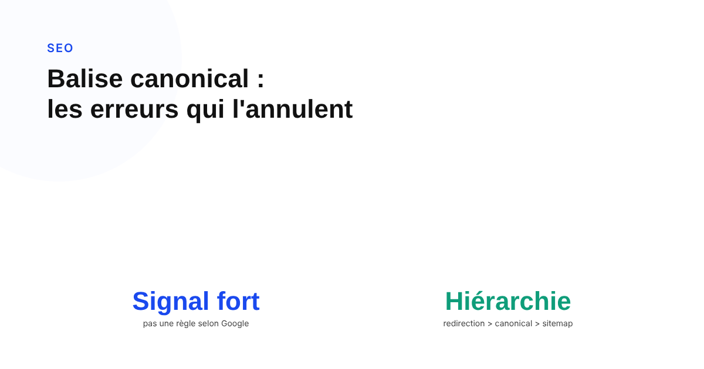
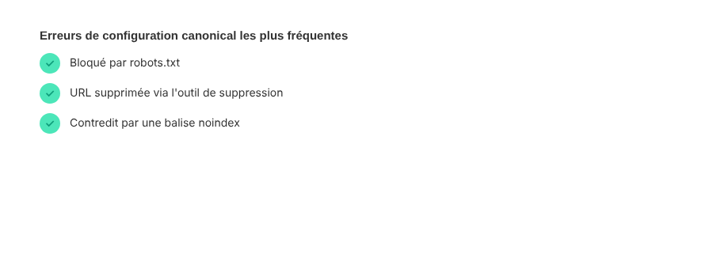

Balise canonical : les erreurs de configuration qui annulent complètement son effet
Beaucoup de sites traitent rel=canonical comme une instruction absolue. Google la décrit lui-même autrement : un signal fort parmi d'autres, que ses systèmes peuvent ignorer si le reste de la configuration le contredit. Voici les erreurs qui la rendent concrètement inefficace.

La balise rel="canonical" est l'une des balises techniques les plus mal comprises du SEO. Beaucoup de sites la traitent comme une instruction ferme : « voici l'URL à indexer, point final ». Ce n'est pas ce que dit Google. Sa documentation officielle sur la consolidation des URL dupliquées parle de « signaux » et de « préférences », jamais d'ordre absolu — et elle précise que Google peut très bien choisir une URL canonique différente de celle indiquée si le reste de la configuration ne va pas dans le même sens.
Ce que Google dit vraiment : un signal, pas un ordre
Dans sa documentation sur la consolidation des URL dupliquées, Google décrit rel="canonical" comme « un signal fort indiquant que l'URL spécifiée devrait devenir la canonique ». La redirection reste le signal le plus fort de tous, suivi par la balise canonical, puis par l'inclusion dans le sitemap — dans cet ordre de poids. Aucun de ces signaux n'est obligatoire, et Google choisira lui-même une URL canonique si le site n'en précise aucune, ou si les signaux fournis se contredisent entre eux.
L'erreur la plus fréquente : des signaux contradictoires
Google liste explicitement, parmi les erreurs de configuration à éviter, le fait de déclarer des URL canoniques différentes pour une même page via des méthodes différentes — typiquement une balise rel="canonical" qui désigne une URL, et un sitemap XML qui en liste une autre pour la même page. Le même problème survient quand les liens internes du site continuent de pointer massivement vers la version non canonique : Google recommande explicitement de lier en interne vers l'URL canonique elle-même, pas vers ses doublons.
Les pièges listés explicitement par Google
La documentation de Google ne se contente pas de principes généraux : elle liste des erreurs précises à ne pas commettre. Utiliser le robots.txt pour gérer la canonicalisation en est une — une URL bloquée peut rester indexée sans que Google en voie jamais le contenu, ce qui ne règle rien. Utiliser l'outil de suppression d'URL de Search Console pour « forcer » un choix en est une autre : il masque toutes les versions de l'URL de la recherche, canonique ou pas. Utiliser noindex sur la page non désirée pour « orienter » Google vers l'autre revient à bloquer complètement cette page de l'index, pas à la fusionner avec sa canonique. Et injecter ou modifier le canonical en JavaScript plutôt que directement dans le code source HTML expose au risque que Google ne l'exécute pas à temps lors du crawl.

Les cas où canonical n'est simplement pas le bon outil
Deux situations reviennent souvent et méritent un autre outil que canonical. Pour les versions linguistiques ou régionales d'une page, Google recommande explicitement d'utiliser hreflang, pas canonical : canonicaliser une version française vers une version anglaise ferait disparaître la version française des résultats de recherche locaux, ce qui est rarement l'effet recherché. Pour des pages produit très proches mais réellement différentes (variantes de couleur, de taille), canonicaliser l'une vers l'autre revient à sacrifier l'indexation d'un contenu qui mériterait d'exister pour sa propre requête — un canonical self-référent, page par page, est presque toujours préférable dans ce cas.
Comment vérifier que la configuration tient vraiment
Quelques vérifications suffisent à éliminer la majorité des erreurs listées par Google : une balise canonical auto-référente présente sur la page canonique elle-même, des URL absolues en HTTPS (Google supporte les chemins relatifs mais les signale comme source de problèmes), une seule méthode de déclaration à la fois — balise HTML ou en-tête HTTP, jamais les deux avec des valeurs différentes — et une cohérence totale entre sitemap, liens internes et balise. L'outil d'inspection d'URL de Search Console affiche directement l'URL canonique que Google a retenue : quand elle diffère de celle attendue, c'est le signal le plus direct qu'une configuration contradictoire existe ailleurs sur le site.
FAQ
La balise canonical est-elle une instruction absolue pour Google ?
Non. Google décrit officiellement rel=canonical comme un signal fort, pas une commande. Si d'autres signaux se contredisent (redirections, liens internes, sitemap), Google peut choisir une URL canonique différente de celle indiquée.
Peut-on utiliser le robots.txt pour gérer la canonicalisation ?
Non, Google déconseille explicitement cette pratique dans sa documentation : une URL bloquée par robots.txt peut rester indexée sans que Google en voie le contenu, ce qui ne règle pas le problème de doublon.
Faut-il utiliser canonical pour les versions traduites d'une page ?
Non. Google recommande hreflang pour les versions linguistiques ou régionales d'une page, pas rel=canonical, qui ferait disparaître les versions traduites des résultats de recherche locaux.
Envie d'un audit technique qui traque les signaux contradictoires avant qu'ils ne coûtent de l'indexation ?
Pour aller plus loin, voir la page SEO, et l'article SEO international : la méthode hreflang sans les erreurs qui l'annulent.
Pour continuer sur ce sujet.